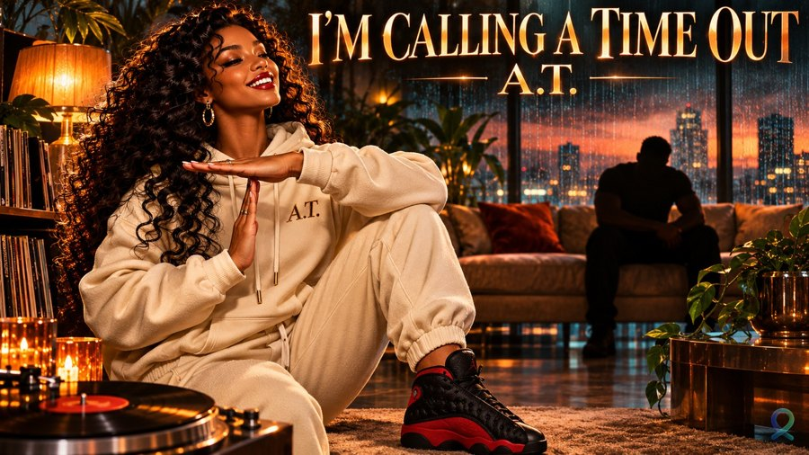

Track 04 · Heart On Pause
I'm Calling A Time Out
We talked until the circle wore a groove. Nothing was getting through. So A.T. does the only thing left: she calls a time out. Not a goodbye. Just a little room to breathe.
 Watch the official video
Watch the official video
Lyrics
[Intro]
Mmm... hmm
Baby, put the kettle down
Sit with me a minute
No, we ain't fighting tonight
I just... I need to say something
[Verse 1]
We been talking in circles 'til the circle wore a groove
Same old record on the needle, same old words that never move
I said it soft, I said it loud, I wrote it on the mirror too
But every word I'm sending, baby, never makes it through to you
Now the tea gone cold between us and the candle burning low
You reaching for the remote and I'm reaching for my coat
Not to leave you, baby, hear me, not to slam the door and run
Just to stand out on the porch a while and let my heart come undone
[Chorus]
I'm calling a time out (time out)
Not a goodbye, just a time out (ooh)
We done said all we can say and it ain't getting through
So I'ma take a little space, and you take some too
I'm calling a time out (time out)
Let the dust settle down, let the night out (mmm)
I ain't saying that it's over, baby, I ain't walking out
I just need a little room to breathe... time out
[Verse 2]
Mama told me love's a garden, you can't pull it up to see
If the roots are still growing, sometimes you just let it be
So I'ma water what I can and leave the rest up to the rain
You go find your quiet corner, I'ma go and find mine again
I still love the way you hum when you think nobody hears
I still sleep in your old hoodie, been wearing it for years
But we can't hear each other shouting over all this noise
So let the silence do the talking 'til it gives us back our voice
[Chorus]
I'm calling a time out (time out)
Not a goodbye, just a time out (ooh)
We done said all we can say and it ain't getting through
So I'ma take a little space, and you take some too
I'm calling a time out (time out)
Let the dust settle down, let the night out (mmm)
I ain't saying that it's over, baby, I ain't walking out
I just need a little room to breathe... time out
[Bridge]
And if you miss me (if you miss me)
Don't you call me in the morning, let it ache a little while
And if I miss you (if I miss you)
I'll be counting every reason that I fell for your smile
'Cause love don't always need the words
Sometimes it needs the room to breathe (breathe)
I'm not letting go, I'm only letting
Ooooh, letting it be! (huge held high note)
[Break]
Time out
Go on and breathe, baby
Me too
I'll still be here
[Final Chorus]
I'm calling a time out (time out!)
Not a goodbye, just a time out (oh, yeah)
We done said all we can say and it ain't getting through
So I'ma take a little space, and you take some too
I'm calling a time out (time out!)
Let the dust settle down, let the night out (whoa)
I ain't saying that it's over, baby, I ain't walking out
I just need a little room to breathe (huge held high note)
Time out
[Outro]
Time out (just a little time)
Room to breathe (breathe, baby)
Ooh, I'm coming back around
Time out... mmm... breathe
Written by Grey Beard and A.T. ℗ & © 2026 Threadia AI, Inc. All rights reserved.